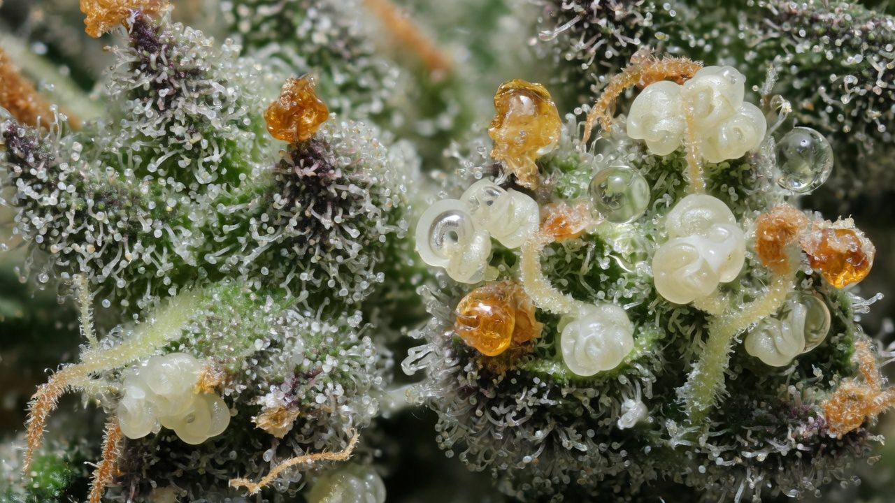
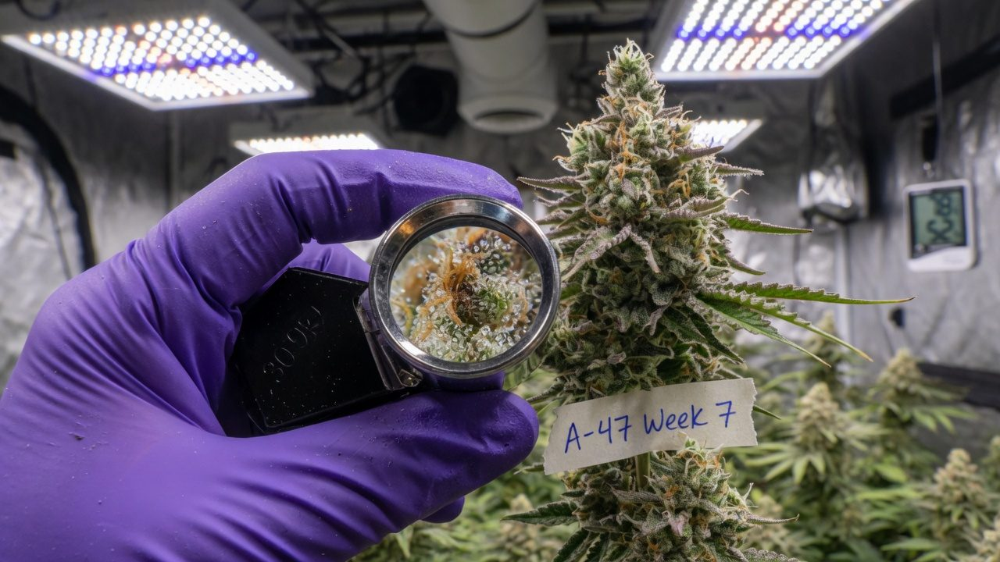
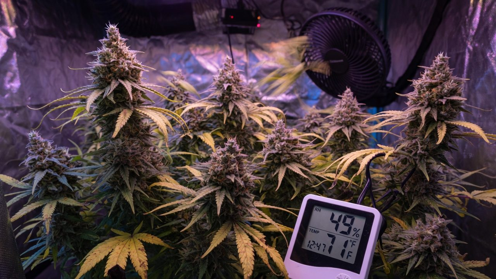
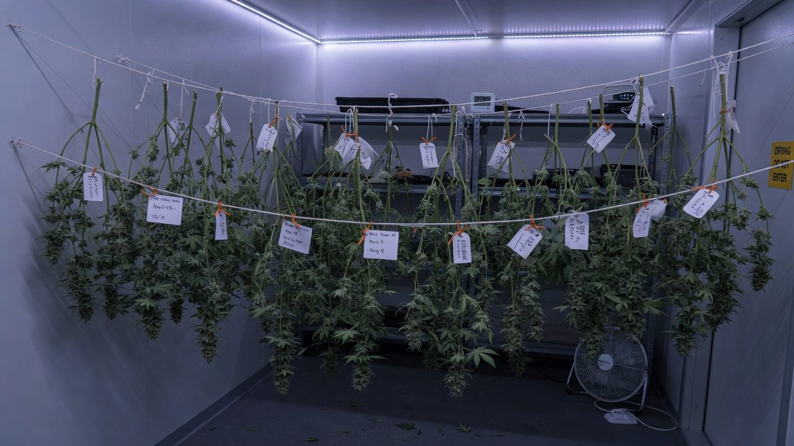

Ripening, flush and the harvest call
The last two weeks and the call to chop: how buds actually ripen, how to read trichomes with a loupe properly, harvest windows by product goal, what the evidence really says about flushing, and how to keep botrytis from eating the reward while you wait.
Purpose and scope
Everything you did for eighteen weeks converges on one decision: when to cut. Cut early and you hand back weight and maturity the plant was still building. Wait too long and you are gambling finished flower against bud rot for marginal gains. This paper is the finish: how buds ripen, how to read them honestly, and how to land the chop where your product goal wants it.
It is written for a first or second grow, so every term is defined and every claim is graded. Where the evidence is solid, we say so. Where the industry runs on folklore, and late flower is where most of the folklore lives. We say that too, plainly. Flushing, amber percentages, 48-hour darkness, UV finishers: each gets the same treatment. What is shown, what is tradition, what is marketing.
Two jobs run in parallel through the final fortnight. Job one: let the plant finish, weight and resin maturity are still accruing later than most beginners believe[6]. Job two: protect what is already built, a dense, ripening canopy is peak botrytis habitat, and one wet night can cost more than a week of extra ripening ever adds[12].
Anyone in week 6+ of flower wondering how close they are. Pairs with the flower cycle week by week upstream and harvest, dry, trim and cure downstream. This paper ends the moment the shears close.
Definitions
Late flower has its own dialect. These eight terms cover everything below, learn them once and the rest reads easily.
Evidence and limitations
We've gone to great lengths to keep these guides honest. One of the main ways we do that is self-review: we actively look for claims that are subjective, only lightly backed by literature, or based on grower practice rather than a controlled study — and we call those out instead of dressing them up as settled science.
Often there simply is no paper for the decision you're making. In those cases we're drawing on what other growers report and what has worked in our own rooms. That can still be useful — but it is not a lab proof. Do what works for your plants, your room, and your meters. If a table disagrees with your crop, believe the crop and log the difference.
- Core definitions and measurement units used in the paper
- Safety-critical limits where occupational or standards sources are cited
- Numeric stage targets (light, climate, feed) as starting bands, not laws
- SOPs that work in many rooms but need your genetics and meters
- Any single-number 'guaranteed' yield or potency claim without a multi-site trial
- Controller setpoints copied from another facility without re-calibration
See something glaringly wrong? Tell us and we'll fix it. Please open a GitHub issue with the paper name and what looks off (include a source if you have one): Report an accuracy issue. Local law, labels, and licences always override any recipe here. Inline notes labelled grain of salt flag the highest-risk over-trust points in the text.
Ripening windows by product goal
Strip away the forum noise and the harvest call reduces to three sentences. Ripeness is read from the trichomes on the calyx surface, not from the calendar, not from pistils. The right moment inside the ripening arc depends on what the flower is for, hash-makers cut earlier than flower growers, and extract-bound biomass is the most forgiving of all. And mould pressure, not impatience, is the only good reason to cut before your target: clean flower cut a few days early beats perfectly ripe flower with botrytis in it, every time.
Why waiting is usually right: harvest-timing trials keep finding that inflorescence weight climbs continuously deep into ripening. In a controlled indoor trial on a CBD cultivar, dry flower weight rose across every harvest point from week 5 to week 11 while cannabinoid concentration stayed flat, the best total yield landed at week 9, not week 7[6]. Cannabinoid tracking through flowering shows the same shape: content builds toward a cultivar-specific peak, and different chemotypes reach it at different times[3].
Read trichomes on the calyx, mid-cola, every two days from week 7. Cut where your product wants: cloudy-dominant with minimal amber for hash, cloudy with 5–15% amber for typical flower. If botrytis shows up, the debate is over, cut now.

Ripening biology
Four visible processes run together in the final weeks, and each one is a signal you can read. Knowing what drives them is what stops you being fooled when one of them lies.
Trichomes mature and change colour. Through late flower the flower surface fills with capitate-stalked trichomes, the large, stalked glands that hold most of the resin. Microscopy work shows these glands change morphology and metabolite content as the flower matures: contents shift, stalks elongate, and the gland head's appearance tracks its internal state[1]. Heads read clear while resin is still thin and building, turn cloudy or milky as contents mature, then amber as the resin ages and oxidation begins. How fast that runs, and how much amber ever shows, is strongly genotype- and age-dependent, some cultivars barely amber before the heads simply collapse[2].
Cannabinoids build to a peak, then the resin ages. Weekly tracking through flowering shows THC and CBD accumulating toward a cultivar-specific peak late in the cycle[3]. Past the peak, THC slowly oxidises toward CBN. The degradation pathway is well documented in stored cannabis, where the CBN:THC ratio is literally used to age samples[4]. Amber heads are that process starting on the plant. Be careful with the folklore extension: ‘amber = couch-lock’ treats CBN as a sedative switch, and the human evidence for that is thin. Amber tells you the resin is past peak; it does not promise a specific effect.
Pistils brown and recede. Stigmas are white and receptive early, then brown and curl as flowers age. Useful as a coarse clock. Mostly-white means far too early, but they respond to stress and pollination as well as ripeness, and foxtailing resets them entirely. Pistils tell you when to start scoping. They never make the call.
Calyxes swell and the plant fades. In the last weeks bracts fatten noticeably, buds look suddenly denser, while fan leaves yellow from the bottom up. The fade is nutrient remobilisation: senescing leaves export their mobile nutrients (nitrogen above all) to the developing flower, a process documented across crop species[5]. A gentle fade in week 8 is the plant finishing on schedule, not a deficiency to fix. A hard, crispy fade in week 6 is a problem, see troubleshooting.
The colour shift is the visible face of resin chemistry: thin fresh resin reads glassy, mature contents scatter light and read milky, and ageing oxidised resin yellows. That is why the read works. And why it is a proxy, not an assay. Two cultivars at the same colour stage are not guaranteed the same chemistry[2].

Assessing ripeness with a loupe
Most bad harvest calls are not bad judgement. They are bad sampling. The grower reads one photogenic spot, or reads sugar leaves, or reads a different bud each visit, and the ‘data’ wanders. Fix the sampling and the call gets easy.
Tools. A 30–60x jeweller's loupe is enough and costs almost nothing. A cheap USB or phone-clip microscope (60–200x) is easier on the eyes, lets you photograph the same spot over days, and makes the clear/cloudy distinction much less ambiguous. Use daylight-white light; HPS-orange light makes everything look amber, and blurple LED makes everything look purple. If the canopy angle is awkward, snip a single calyx and read it on a bench. A steady image beats a wobbling in-situ one.
Where. Read the surface of the calyxes on the bud itself, mid-cola, at mid-canopy height. Not the sugar leaves. The small leaves inside the bud carry trichomes that mature and amber days ahead of the calyx surface, and reading them is the classic way to chop a week early. Mark two or three scoping spots with a bit of tape on the branch and return to exactly those spots every visit, plus one top cola so you can see the vertical gradient moving[7].
How often. Every two days from week 7 (or whenever pistils are majority brown). Trichome stages move on a timescale of days, and a twice-weekly read gives you a trendline instead of a snapshot. Log a one-line estimate each visit, for example ‘d52: ~15% clear / 80% cloudy / 5% amber, mid’, because the trend across visits is the actual signal.
- Same spots, every visit: 2–3 marked mid-cola calyx sites plus one top cola.
- Same light: daylight-white torch or room lights, never under HPS glow.
- Read the calyx dome, ignore sugar-leaf trichomes entirely.
- Estimate percentages across the field of view, population, not the prettiest gland.
- Write it down. Three data points make a trend; zero data points make a vibe.
Harvest windows by product type
The single most useful upgrade to ‘when do I harvest?’ is realising it is the wrong question. The right question is ‘what is this flower for?’, because the product defines the window.
Ice-water hash and rosin: cut at cloudy max, before amber. Hash-making is mechanical separation of intact trichome heads, and it wants them at peak structure: fully swollen, cloudy, and still cleanly detachable. Hash-makers consistently target maximum milky coverage with minimal amber. Amber heads are past peak, measurably smaller, and wash and press into darker, greasier product[8]. On some cultivars 10–20% amber at peak cloudy is unavoidable and acceptable; nobody washing for quality waits for it on purpose.
Flower: cloudy-dominant with 5–15% amber is the conventional call. Smokeable flower has more room to ride the curve into early amber, full maturity, full weight, developed aroma. Growers chasing a ‘heavier’ finish deliberately wait for 20–30% amber. Be honest about what that buys: documented resin ageing[4], folklore-grade effect claims, and real extra days of rot exposure[12].
Extract-bound biomass (distillate carts): the widest window. Distillation strips and refines the extract anyway, so trichome-stage precision matters least, total cannabinoid content and clean, mould-free biomass matter most. Cutting a few days either side of peak moves little; letting botrytis in, or letting flower sit over-ripe and degrade, still costs potency. Ripeness discipline relaxes; sanitation discipline does not.
| Product | Cut at | Why | Cost of missing late |
|---|---|---|---|
| Ice-water hash / rosin | Cloudy max, minimal amber | Intact, fully-swollen heads separate and press cleanest | Darker, greasier hash; smaller aged heads wash poorly |
| Flower (typical) | Cloudy-dominant, 5-15% amber | Full weight and aroma at resin maturity | Fades toward harsher, sleepier folklore territory; rot exposure grows |
| Flower (heavier preference) | 15-30% amber | Deliberate over-ripening for a heavier reputation | Documented resin ageing; longest rot exposure of any flower cut |
| Distillate carts / extract | Anywhere near peak | Refinement forgives trichome-stage drift | Only real enemies are mould and gross over-ripeness |
Running one cultivar for both hash and flower? Stagger by product: take the hash plants (or the hash-destined top canopy) at cloudy max, and give the flower plants the extra ripening days. One room, two chops, both products in their window.
Flushing: evidence and limitations
The tradition: feed plain water for the last 7–14 days so the plant ‘uses up’ stored nutrients, giving smoother smoke, better flavour and white ash. It is one of the most confidently repeated rules in cultivation. It is also the one with the least supportive evidence, so here is what happens when someone actually tests it.
The Rx Green Technologies trial. The most-cited direct test: Cherry Diesel flushed for 0, 7, 10 or 14 days before harvest, then measured. No significant differences in yield (average 97.3 g/plant), THC (average 21.9%) or terpenes across any flush duration. Flower mineral content did not drop the way the theory requires, nitrogen ran only ~6.7% lower after 14 days, and iron and zinc were actually higher in flushed flower. A blind consumer panel could not pick the flushed samples, and trended toward preferring the unflushed one, 36% rated the 0-day smoke smooth versus 19.4% for the 14-day flush (not statistically significant)[9].
The Guelph work agrees. An MSc thesis at the University of Guelph ran end-of-cycle nutrient-deprivation experiments on medical cannabis and found flushing did not meaningfully deplete flower elemental content and did not affect yield[10]. Neither source is bulletproof. One is a manufacturer white paper on a single cultivar with a small taste panel, the other a thesis rather than journal-reviewed work (with a later erratum on a separate chapter), but both independent tests point the same way, and no controlled study showing the opposite has surfaced.
Why the theory was always shaky. Flushing the root zone rinses the substrate, not the flower. Minerals already in bud tissue got there through the plant, and water around the roots does not pull them back out. What actually moves nutrients out of leaves late in the cycle is senescence-driven remobilisation, the plant's own salvage program[5]. Which runs with or without a flush. What a long flush does do is crash substrate EC and force the plant onto reserves early, which can accelerate the fade and, pushed hard, trade away late bulking that trials show is real weight[6].
| Claim | What testing found | Verdict |
|---|---|---|
| Smoother smoke, better flavour | Blind panel couldn't detect flushing; trend favoured unflushed | Unsupported[9] |
| Removes minerals from flower | Flower mineral content essentially unchanged; Fe and Zn higher in flushed | Contradicted[9][10] |
| White ash proves a clean flush | Ash colour tracks combustion and moisture, never validated as a flush marker | Folklore |
| Flushing costs nothing | Long flushes can force early senescence while weight is still accruing | False - there is downside[6] |
| Late-cycle feed tapering | Uptake falls as the plant senesces; tapering EC to match is agronomy, not flushing | Reasonable middle ground |
Positions genuinely run both ways. Many commercial SOPs still specify a 7–14 day plain-water flush, partly tradition, partly market expectation, and buyers asking ‘was it flushed?’ is a real commercial force. Others feed full-strength to the day of chop, citing the trials above. A common middle path tapers feed EC over the final week, matching falling uptake without starving the plant. What the evidence rules out is the strong claim: that a long plain-water flush detectably improves the smoke. If you flush anyway, keep it short; nobody has shown a benefit that pays for three weeks of starvation.

Late-flower climate management
The environmental job in the last fortnight is asymmetric. The temperature moves are nice-to-have practitioner practice. The humidity discipline is survival. Get the priority right: RH ceiling first, everything else after.
Temperature: common practice, thin evidence. Most experienced growers ease day temperature down a couple of degrees (roughly 26 to 23°C) and let nights run cooler (21 to 18°C) over the final two weeks. The claimed benefits (preserved terpenes, tighter buds, purple expression) are mostly untested in controlled cannabis work: cool nights do trigger purpling in anthocyanin-capable genotypes, but the potency and terpene-preservation claims remain unverified. The move is low-risk and defensible; just know one real side-effect: cooler air holds less water, so the same moisture load reads as higher RH. Every degree you drop makes the humidity job harder, and your dehumidification has to make up the difference.
Humidity: this is the non-negotiable. Ripening buds are dense, self-shading moisture traps, and Botrytis cinerea, bud rot, is the single most destructive thing that can happen this late. Greenhouse studies of bud rot show infection risk climbing with humidity and bud density, with the pathogen developing inside the cola where you cannot see it until the damage is done[11]. Spores are effectively everywhere; epidemiology work frames control as environment and sanitation, not eradication[12]. Practically: hold RH 45–55%, treat 58% as an absolute ceiling, keep air moving through the canopy (not blasting at it), and watch the lights-off transition, the temperature drop at lights-off spikes RH and can push dense colas to condensation. That one hour is where most rot starts.
UV ‘finishers’: treat the marketing with suspicion. The pitch, blast UV in the last weeks to spike THC, keeps failing controlled tests. The largest indoor light-intensity study found supplemental UV did not increase yield or cannabinoid content at all[13], and a 2024 spectrum study found UV treatments reduced or left yield unchanged and raised no cannabinoids, with THC actually lower under the strongest UV-B; the sole positive was ~20–30% gains in a few terpenes at very low UVA doses[14]. If you already own the hardware, a low-dose UVA experiment is defensible. Buying lamps to chase potency is buying the part of the claim that testing keeps rejecting.
Every extra ripening day is bought with rot exposure. If your room cannot hold the RH band (undersized dehumidifier, dense canopy, lights-off spikes) the honest play is to harvest at the early edge of your window, not to white-knuckle a late chop in botrytis territory[12].
Staggered harvesting
The vertical gradient is real: top colas get the most light, mature first, and carry the highest cannabinoid and terpene content, with both falling measurably toward the bottom of the plant[7]. A whole-plant chop therefore harvests the top at peak and the bottom early. The staggered alternative: take the ripe top third now, then give the suddenly well-lit lower canopy another 4–10 days to swell and finish before a second cut.
It works because the two things the lower canopy lacked, light and time, both arrive the moment the tops leave, and because late-cycle weight gain is real[6]. The cost is operational: two harvest days, two dry-room loads, longer room occupancy, and several more days of rot exposure on the remaining canopy. It is a quality play for small-to-mid rooms, not a free lunch.
| Factor | Whole-plant chop | Staggered (top first) |
|---|---|---|
| Lower-bud ripeness | Cut days early, more larf | Finishes properly; grade improves |
| Labour + dry room | One event, one load | Two events, two loads |
| Room turnover | Fastest | +4-10 days occupancy |
| Rot exposure | Ends at chop | Continues for the remainder - RH discipline must hold[12] |
| When it wins | Big rooms, tight schedules, extract biomass | Quality-focused rooms with spare days and controlled RH |
After the top cut, re-mark scoping spots on the remaining canopy and restart the two-day loupe cadence. The lower buds accelerate under new light. They often close the gap faster than the original schedule suggests. And handle the cut surfaces cleanly: sanitise shears between plants so the first harvest doesn't inoculate the second.

Harvest-day logistics
By chop day the quality is already grown. The job now is purely defensive: move the crop from room to dry space without bruising it, contaminating it, or stalling it in a bin. Everything below is decided before the first cut.
- 1Verify the dry space the day beforeDry room running and stable at roughly 15-16 C and ~60% RH (the classic 60/60), dark, gentle indirect airflow, cleaned and sanitised. Never cut a plant before the place it dries is proven, a crop waiting in bins while you fix a dehumidifier is a crop composting.
- 2Final rot scout, then quarantineWalk every plant with a torch before cutting. Any botrytis, grey fuzz, brown-from-the-inside bud, colas that pull apart wet, gets cut out first, bagged at the plant, and removed from the room. Never carry infected material across the canopy, and never hang it with the clean crop.
- 3Stage the kitSanitised shears (dip between plants), gloves, labels and tags per plant or batch, bins or hanging lines, scale for wet weights. Decide wet-trim vs dry-trim now, not mid-chop, the workflow differs from the first cut onward.
- 4Cut in the right orderOne cultivar at a time so genetics never mix. Whole-plant or branch-by-branch per your dry space. Keep plants off the floor, handle by stem only. Every touch on flower costs trichomes.
- 5Weigh and log wet weightsWet weight per plant or bin, tagged to cultivar and room position. This is the baseline for dry-down ratio (~10% dry-to-wet is typical) and the start of traceability.
- 6Hang with spaceColas must not touch each other, contact points dry slowest and rot first. Load the dry room evenly, close the door, and let the environment do the work. From here, the dry and cure paper takes over.
Two chop-day traditions deserve a flag. 48 hours of darkness before harvest (claimed to boost resin) and harvesting pre-dawn (claimed to catch peak terpenes) both lack any controlled cannabis evidence. Neither is harmful, cool, dark and unstressed is fine for a plant about to be cut, but schedule the chop for when your team is fresh and the dry room is ready. Those two factors demonstrably matter; the folklore ones haven't shown up in testing.
Removing half a room of transpiring plants crashes the humidity load and the climate control's assumptions. If other plants remain (staggered harvest, mixed-age rooms), re-check RH and airflow within the hour, setpoints tuned for a full canopy behave differently in a half-empty one.
Common finishing failures
Late-flower mistakes cluster hard. Six patterns account for nearly all of them, three are impatience, two are bad reads, one is neglect.
Troubleshooting
Quick lookups for the confusing reads. Most of these are the plant and the room disagreeing with the calendar, believe the plant, then fix the room.
| What you see | Most likely cause | What to do |
|---|---|---|
| Week 9+, trichomes cloudy for days, no amber appearing | Genotype that barely ambers; heads will eventually collapse instead | Treat sustained cloudy-max as the window[2]. Don't wait for a colour some cultivars never show |
| Pistils all brown at week 6 but trichomes mostly clear | Stress-browned or pollinated stigmas, not ripeness | Ignore pistils, scope on. Check for seeds and for heat/pollen sources |
| Fresh white pistils erupting from mature buds late | Foxtailing from heat or light stress resetting bud growth | Fix hotspots / lower PPFD; read the original calyxes below the foxtail, not the new growth |
| Amber on sugar leaves, clear-cloudy on calyxes | Normal - leaf trichomes run days ahead | Read only the calyx surface. This gap is why leaf reads chop early |
| Hard crispy fade by week 6, buds still immature | Over-flush, N crash, or root-zone EC collapse - senescence started early | Restore modest feed; accept some cost. Next round, taper instead of starving[5] |
| Grey fuzz or brown mush inside a cola while you wait for ripeness | Botrytis bud rot - it starts inside, where RH spikes condense | Cut out and bag infected colas immediately; drop RH, add airflow; if spreading, harvest now[11] |
| Buds seem to stop swelling, trichomes stall for a week+ | Cold room, crashed feed, or the plant is simply done | Verify temps and EC first. If the room is right and trichomes sit at cloudy-max, that's the window - cut |
Ripeness variation and harvest decisions
If one idea from this paper survives contact with your first harvest, make it this one:
A plant is never ‘ripe’. It is a population of millions of trichomes spread across a vertical gradient, each gland moving clear → cloudy → amber on its own schedule[1][7]. The harvest call is choosing which slice of that distribution to freeze: hash-makers freeze it cloudy, flower growers let the amber tail grow first, extractors barely care. And botrytis is the deadline that truncates the whole curve, the only signal that outranks the loupe.
Everything else in the paper is that model plus logistics. Scoping cadence samples the distribution honestly. Product windows pick the target slice. The RH ceiling defends your right to keep waiting. Staggering harvests the gradient in two slices instead of averaging it. And the flush debate stops mattering once you see that nothing you pour into the substrate in the last week repaints the trichomes[9].
From here the crop stops being grown and starts being preserved: harvest, dry, trim and cure covers the next fortnight, and the mould-risk paper covers the enemy that follows the crop into the dry room. Cut clean, cut in the window, and let the loupe, not the calendar, not the forum, make the call.
References
- Livingston SJ, Quilichini TD, Booth JK, Wong DCJ, Rensing KH, Laflamme-Yonkman J, Castellarin SD, Bohlmann J, Page JE, Samuels AL. Cannabis glandular trichomes alter morphology and metabolite content during flower maturation. Plant J. 2020;101(1):37-56. https://doi.org/10.1111/tpj.14516
- Punja, Z.K., Sutton, D.B., & Kim, T. (2023). Glandular trichome development, morphology, and maturation are influenced by plant age and genotype in high THC-containing cannabis (Cannabis sativa L.) inflorescences. Journal of Cannabis Research, 5(1), 12. https://doi.org/10.1186/s42238-023-00178-9 https://doi.org/10.1186/s42238-023-00178-9
- Aizpurua-Olaizola O, Soydaner U, Ozturk E, Schibano D, Simsir Y, Navarro P, Etxebarria N, Usobiaga A (2016). Evolution of the cannabinoid and terpene content during the growth of Cannabis sativa plants from different chemotypes. Journal of Natural Products 79(2):324-331. https://pubs.acs.org/doi/10.1021/acs.jnatprod.5b00949
- Ross SA, ElSohly MA (1997). CBN and delta-9-THC concentration ratio as an indicator of the age of stored marijuana samples. Bulletin on Narcotics (UNODC) 49(1):139-147. (Room-temperature storage lost ~16.6% of THC in year one; CBN is essentially absent in fresh, carefully dried material.) https://www.unodc.org/unodc/en/data-and-analysis/bulletin/bulletin_1997-01-01_1_page008.html
- Maillard, A., Diquelou, S., Billard, V., Laine, P., Garnica, M., Prudent, M., Garcia-Mina, J.-M., Yvin, J.-C., & Ourry, A. (2015). Leaf mineral nutrient remobilization during leaf senescence and modulation by nutrient deficiency. Frontiers in Plant Science, 6, 317. https://doi.org/10.3389/fpls.2015.00317 https://pmc.ncbi.nlm.nih.gov/articles/PMC4429656/
- Massuela DC, Hartung J, Munz S, Erpenbach F, Graeff-Honninger S. Impact of Harvest Time and Pruning Technique on Total CBD Concentration and Yield of Medicinal Cannabis. Plants. 2022;11(1):140. doi:10.3390/plants11010140 https://doi.org/10.3390/plants11010140
- Namdar D, Mazuz M, Ion A, Koltai H (2018). Variation in the compositions of cannabinoid and terpenoids in Cannabis sativa derived from inflorescence position along the stem and extraction methods. Industrial Crops and Products 113:376-382. (Cannabinoid and terpenoid content decreased from top to bottom of the flowering stem.) https://doi.org/10.1016/j.indcrop.2018.01.060
- The Press Club. The importance of the clear-to-milky trichome transition for hash makers (harvest at maximum milky coverage with minimal amber; amber heads measure smaller and degrade extraction quality). Practitioner guide, not peer-reviewed. (industry/manufacturer or non-journal source) https://thepressclub.co/blogs/tips-tricks/the-importance-of-clear-to-milky-trichome-transition-for-hash-makers
- Rx Green Technologies (2019). The impact of flushing on cannabis flower: trial report. Cherry Diesel flushed 0, 7, 10 or 14 days; no significant differences in yield (avg 97.3 g/plant), THC (avg 21.9%) or terpenes; flower minerals essentially unchanged; blind taste panel trended toward the unflushed sample. Manufacturer trial white paper, not peer-reviewed. (industry/manufacturer or non-journal source) https://www.rxgreentechnologies.com/rxgt_trials/flushing-trial/
- Stemeroff J (2017). Irrigation management strategies for medical cannabis in controlled environments. MSc thesis, University of Guelph. (End-of-cycle flushing experiments found flower elemental content was not depleted and yield was unaffected. Thesis with later erratum on a separate chapter; not journal peer review.) (industry/manufacturer or non-journal source) https://atrium.lib.uoguelph.ca/items/7d550060-3f70-40c8-bb25-610f8af0741c
- Mahmoud M, BenRejeb I, Punja ZK, Buirs L, Jabaji S. Understanding bud rot development, caused by Botrytis cinerea, on cannabis (Cannabis sativa L.) plants grown under greenhouse conditions. Botany. 2023;101(4):200-231. https://doi.org/10.1139/cjb-2022-0139
- Punja ZK, et al. (2025). The epidemiology and management of Botrytis cinerea causing bud rot on greenhouse-cultivated cannabis. Can. J. Plant Pathol. https://doi.org/10.1080/07060661.2025.2478250
- Llewellyn D, Golem S, Foley E, Dinka S, Jones AMP, Zheng Y. Indoor grown cannabis yield increased proportionally with light intensity, but ultraviolet radiation did not affect yield or cannabinoid content. Front Plant Sci. 2022;13:974018. https://doi.org/10.3389/fpls.2022.974018
- Huebner DS, Batarshin M, Beck S, König L, Mewis I, Ulrichs C (2024). Influence of different UV spectra and intensities on yield and quality of cannabis inflorescences. Front. Plant Sci. 15:1480876. https://doi.org/10.3389/fpls.2024.1480876
Citations marked in-text as [n] map to this list. Primary literature and official guidance except where noted. Cannabis tissue culture is strongly genotype-dependent, verify dilutions, hormone doses and local regulations against the primary sources before relying on them.